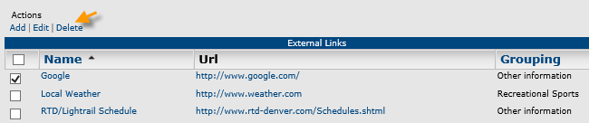
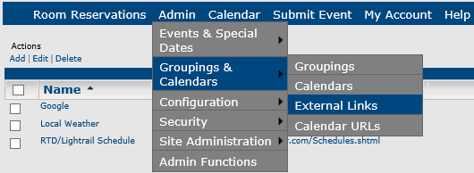
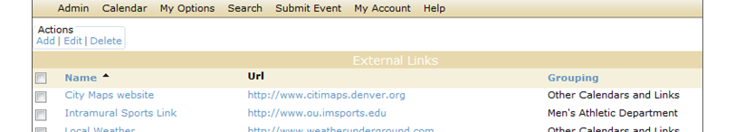
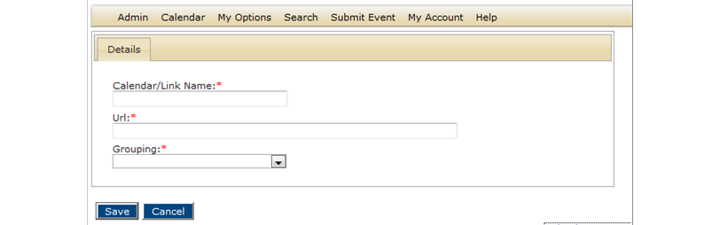
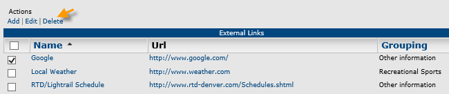
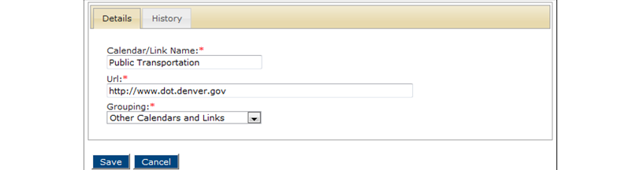
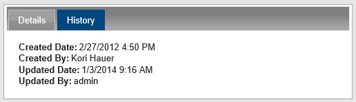

Tip:You can delete one or more links by clicking the Delete option.

An external link is a link to a website that is outside of Master Calendar; when you associate a link with a calendar grouping, they appear on these calendars for users' convenience. For example, if you have a grouping of calendars for a university’s athletic department, and many of the athletic events take place at the university’s stadium, you may wish to associate that grouping with an external link to the university’s website, "About the Stadium." This topic guides you in creating links and working with existing links.
1. On the Admin menu, point to Groupings and Calendars > External Links.

The External Links page opens, listing all active external links in Master Calendar .

2. Under Actions, click Add. A blank Details tab opens, where you can name the external link, specify the URL, and select the calendar grouping to which the link belongs.

3. Enter the Calendar/Link name and the URL.
4. Select the calendar grouping for the link.
5. Click Save. The link is saved in Master Calendar and displays on calendars in the grouping you specified.
1. From Step 1 above, select the link you wish to work with.
| Tip:You can delete one or more links by clicking the Delete option.  |
2. Under Actions, click Edit. The Details tab opens.

| Tip:To see history of this link, click the History tab.  |
4. Edit information for the link as needed.
5. Click Save to save your changes.
Page tags: article:topic